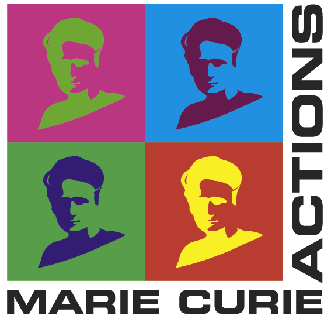

Skip to main content.
Tamil Dependency Treebank v0.1
Main Menu
Home
Introduction
Morphological Annotation
Syntactic Annotation
Download
Authors
License
Acknowledgements
Acknowledgements
This project has been supported by
(i) The European Commission's 7th Framework Program (FP7) under grant agreement n° 238405 (
CLARA
) and
(ii) The Grant MSM 0021620838 of the Czech Ministry of Education.
